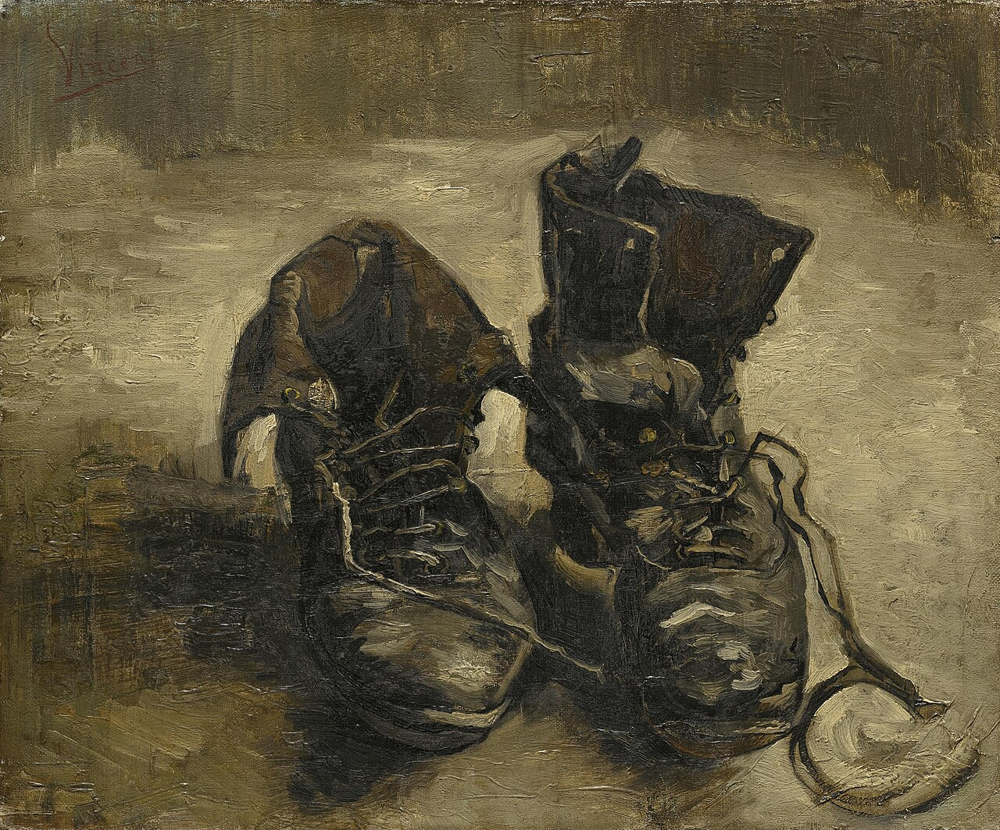

세계가 나에게 배달될 때
나는 세계를 겪는가
00이 주차의 위상
안더스는 하이데거와 아도르노를 함께 계승함. 그래서 오늘은 하이데거를 먼저 세우고 안더스로 넘어감.
- 날씨 — 앱에서 봄.
- 뉴스 — 피드에서 봄.
- 친구의 근황 — 스토리에서 봄.
- 오는 길 — 지도가 알려줌.
- 겪은 것은 세계인가, 세계의 배달본인가. 그리고 그 둘의 차이를 느낄 수 있는가.
01오늘 만날 개념
- 존재자 · 존재Seiendes / Sein
- 존재자는 있는 것들(책상·나무·망치). 존재는 그것들이 있다는 것 자체이자 그것들이 갖는 의미임.
- 도구연관Zeugzusammenhang
- 망치는 못을 위해, 못은 판자를 위해, 판자는 집을 위해. 도구들이 서로를 가리키며 만드는 의미의 그물.
- 알레테이아Aletheia · 비은폐
- 가려진 것이 드러남. 하이데거의 진리는 "맞음"이 아니라 "드러남"임.
- 테크네techne
- 그리스어로 기술과 예술을 함께 뜻했음. 지금의 technology와 art가 원래 한 단어였음.
- 게슈텔Gestell · 닦달 · 몰아세움
- 모든 것을 사용 가능한 자원으로 세워두는 현대 기술의 방식임.
- 부품Bestand
- 게슈텔이 만들어낸 존재 방식. 언제든 꺼내 쓸 수 있게 대기 중인 것임. 요즘 말로 on-demand.
- 팬텀phantom
- 안더스에게는 존재하면서 동시에 존재하지 않는 것임. 존재론적 모호성.
- 매트릭스matrix
- 모체·회로망·행렬·활판. 안더스에게는 실재가 복제되는 틀임.
- 객체지향 프로그래밍OOP
- 데이터와 기능을 객체로 묶고, 내부를 감춘 채 서로 메시지만 주고받게 하는 방식임.
- 객체지향 존재론OOO
- 그레이엄 하먼 등. 모든 객체는 서로에게 완전히 드러나지 않고 물러나 있다는 존재론임.
02존재자와 존재
존재자
Seiendes- 이성과 과학의 세계에서 개념화된 물리적 사물임
- 분석하면 나오는 것
존재
Sein- 생활세계와 도구연관의 세계에서 개별 사물이 갖는 의미임
- 사물이 인간과의 관계에서 만들어내는 삶의 상황
- 망치를 분석하면 — 쇠 500g, 나무 자루 30cm. 이것이 존재자로서의 망치임.
- 망치를 쓸 때 — 나는 망치를 보지 않음. 못을 보고, 판자를 보고, 만들려는 것을 봄.
- 망치는 손에 잡혀 사라짐. 이것이 존재로서의 망치임.
- 잘 작동하는 도구는 보이지 않음. 고장 나야 보임.
- 하이데거는 매체철학자가 아니지만, 매체철학의 핵심 통찰을 도구론으로 먼저 말했음.
- 하나 더 — 초보 운전자는 핸들과 페달을 의식함. 그래서 못 함. 숙련되면 핸들이 사라지고 길만 보임. 도구가 사라지는 순간이 도구가 가장 잘 작동하는 순간임.
예술은 은폐된 존재를 드러내는 활동임
- 예술은 존재자의 세계(사물의 의미, 진리)와 대지(사물이 사용되는 생활 터전)의 투쟁을 일으켜, 존재자의 진리가 스스로 작품 안에 정립되게 함.
- 알레테이아(비은폐) = 진리임.
- 작가성 부정 — 작품이 진리를 드러내는 것이지 작가가 만드는 것이 아님.

미술사가 마이어 샤피로는 "그 구두는 농부 것이 아니라 고흐 자신의 것"이라고 반박했음. 데리다가 이 논쟁을 다시 다뤘음. 해석이 대상을 만든다는 점에서 그 자체로 좋은 사례임.
03게슈텔과 부품
- 기술도 세계와 대지를 매개함. 기술은 원래 매체임.
- 현대 기술의 타락 — 예술로부터 분리됨. 테크네는 원래 기술과 예술을 모두 포함하며 알레테이아를 뜻했음.
- 실용적 목적을 위해 인간을 닦달함(gestellen).
모든 존재자는 사용을 위해 조정되고
주문 요청되는 부품."
| 게슈텔이 만드는 세계 | |
|---|---|
| 1 | 세계 전체는 이익을 위한 하나의 거대한 공장임 |
| 2 | 모든 존재자는 사용을 위해 조정되고 주문 요청되는 부품임 |
| 3 | 물질적 만족을 위한 합리적 계산이 절대적 원칙임 |
| 4 | 끝없는 만족을 추구하며 끊임없이 재편성됨 |
→ 과학기술에 편입된 인간은 사유를 망각함.
"모든 존재자는 사용을 위해 조정되고 주문 요청되는 부품임." on-demand. 하이데거가 1950년대에 쓴 말이 지금 클라우드 서비스의 표준 용어임.
부품화의 계보
데이터화(datafication)는 게슈텔의 완성인가. "모든 것이 데이터가 될 수 있다"는 말은 "모든 것이 부품이 될 수 있다"와 같은 말인가.
- 기술에 부정적이지만 동시에 가능성을 탐구함.
- 기술의 본성은 악하지 않음.
- 예술로서의 기술이 필요함 — 도구적 목적에서 벗어난 기술.
- 그는 횔덜린을 인용함 — "위험이 있는 곳에 구원도 자란다." 기술 안에 기술을 넘어설 것이 있다는 구조임.
- → 15주차 육후이의 코스모테크닉스가 정확히 이 자리에서 출발함.
04프로메테우스적 부끄러움
독일어권 아카이브(Österreichische Mediathek 등)에서 개별 허락을 받는 방법이 있음
기술에 대한 비관
- 세계는 하나의 거대 기기임.
- 기술은 이미 수단이 아님.
- 기술이 인간을 소비함 → 주객전도.
프로메테우스적 부끄러움과 격차
- 호모 파베르(도구적 인간)는 끊임없이 기기를 생산함.
- 인간이 자신이 만들어낸 사물로부터 소외됨. 기기가 점차 거대기기로 체계화됨.
- 프로메테우스적 격차 — 인간과 생산물 세계 사이의 비동시성. 격차가 증가함. 인간은 자신이 만든 사물의 노예가 됨.
- 프로메테우스는 인간에게 불을 준 신임. 인간은 만드는 존재임.
- 그런데 안더스가 말하는 부끄러움은 이것임 — "내가 만든 것이 나보다 낫다."
- 기계는 지치지 않고, 틀리지 않고, 죽지 않음.
- 나는 그 앞에서 내가 태어난(만들어진 것이 아닌) 존재라는 것이 부끄러움.
- AI 초안을 보고 "내가 쓴 것보다 낫네" 하고 느낀 적이 있는가.
- 그때 든 감정은 고마움인가, 안도인가, 부끄러움인가, 화인가.
- 안더스는 그것이 부끄러움이라고 1956년에 예측했음. 맞았는가.
05팬텀의 세계
대중매체의 하위문화 생산 비판
- TV와 라디오는 탈문자적 문맹자 집단을 유도함.
- 아이콘 매니아를 위한 기계적 이미지를 대량생산함.
- 대중의 교양과 문화 수준이 저하됨.
팬텀이란
- 존재하지만(현실) 존재하지 않는(가상) 것. 존재론적 모호성임.
- TV의 현장 생중계가 그 전형임.
- 팬텀을 통한 세계 체험의 일상화. 가상 세계를 실재 세계로 인식하는 혼란.
- 생중계되는 화면 속 사건은 실제로 일어나고 있음.
- 그런데 나는 거기 없음.
- 있는 것도 아니고 없는 것도 아닌 상태 — 그것이 존재론적 모호성임.
- 재난 생중계를 보며 안전한 방에 앉아 있을 때.
- 지구 반대편 전쟁 영상을 보고 다음 영상으로 넘어갈 때.
- 라이브 커머스에서 "지금 딱 세 개 남았습니다"를 볼 때.
- → 나는 그 자리에 있는가, 없는가.
- 보드리야르 — 원본이 없음.
- 안더스 — 원본이 있는데 내가 거기 없음.
- 다른 이야기임.
06매트릭스와 대중의 퇴행
매트릭스란
- 모체 · 회로망 · 행렬 · 활판의 뜻임.
- TV가 실재를 복제하는 방식이 반영되는 구성물임.
- 취재·편집·제작 규칙대로 짜여지는 판임.
차이 소멸
능가함
따름
- 관광지가 사진 잘 나오게 개조됨. 포토존이 먼저, 풍경이 나중임.
- 음식점이 배달 사진에 맞게 플레이팅을 바꿈.
- 정치인이 짧은 클립에 맞게 말함.
대중의 퇴행 — 세 갈래
① 수동적 소비자
주는 것만 봄- 정해진 방식으로 제작·제공된 콘텐츠만 소비함
- 주체적 생산 참여가 불가능함
② 몰개성화
취향이 수렴함- 개인적 취향과 개성이 소멸함
③ 개인화
혼자 봄- 사회적 세계를 사적 공간에서 개별적으로 체험함
- 상호작용이 없음
- 몰개성화와 개인화가 동시에 일어남 — 모순처럼 보이지만 모순이 아님.
- 각자 다른 것을 봄 (개인화). 각자 혼자 봄 (상호작용 없음). 그런데 결과는 비슷해짐 (몰개성화).
- → 6주차 아도르노의 '유사개인화'와 정확히 같은 구조임. 두 사람 모두 같은 것을 봤음.
- → 13주차 플루서의 '원형극장형'(참여자 사이 소통 없음, 채널만 존재)이 이것의 도해임.
안더스의 관점과 한계
그가 본 것
종말론적 매체관- TV는 정보 전달 수단이 아니라 인식과 생활에 영향을 미치는 거대한 판이자 세계 자체임
- 생활의 일부라 객관적 거리두기가 불가능함
- 가상이 실재를 잡아먹는 비극적 사건임
그가 못 본 것
슬라이드가 스스로 인정함- 실재 조작이라는 부정적 측면에만 초점을 둠
- 수용자의 능동성을 무시함. 중독이 아닌 활용도 가능함
- 쌍방향성과 사회적 시청을 보지 못했음
07지각의 확장과 축소
심혜련(2024) II부 3장 1절 「지각의 재평가」 pp.207~212 + 3절 「매체에 의한 지각의 확장과 축소」 pp.222~229.
- 1절 — 지각을 낮은 인식으로 보던 전통에 대한 재평가임. 매체철학이 왜 지각을 중심에 놓는지가 여기서 설명됨.
- 3절 — 이 절의 제목이 곧 오늘의 물음임.
맥루언 9~10주차
확장- 미디어는 인간의 확장임
안더스 오늘
축소- 매체는 인간을 무능력하게 만듦
심혜련
둘 다- 확장이면서 동시에 축소임
- 개인화 피드는 지각을 확장하는가 축소하는가.
- 확장 — 내가 결코 못 만났을 세계를 만남.
- 축소 — 내가 만날 세계가 미리 걸러짐.
- 두 답이 모두 참일 때, 무엇을 판단 기준으로 삼는가.
08객체지향 — OOP와 OOO
변정수(2025) 4부 6장 「객체지향프로그래밍과 객체지향 철학」.
| 원칙 | 내용 |
|---|---|
| 캡슐화 | 내부 데이터를 감추고 정해진 인터페이스로만 접근하게 함 |
| 상속 | 기존 객체의 성질을 물려받음 |
| 다형성 | 같은 메시지에 객체마다 다르게 반응함 |
| 추상화 | 필요한 것만 드러내고 나머지는 숨김 |
나는 자판기 안을 볼 수 없음. 볼 필요도 없음. 동전 넣기와 버튼 누르기라는 정해진 통로로만 접근함. 이것이 캡슐화임. 감추는 것이 미덕인 설계임.
하이데거 → 하먼 → OOP는 이미 한 줄임
- 그레이엄 하먼의 객체지향 존재론은 하이데거의 도구분석에서 직접 나왔음.
- 하이데거 — 망치는 쓰일 때 물러남(withdraw).
- 하먼 — 물러남은 인간과의 관계에서만이 아님. 객체는 다른 객체에게도 완전히 드러나지 않음.
| 개념 | 서술 |
|---|---|
| 부품 하이데거 | 사용을 위해 조정되고 주문 요청되는 것 → 언제든 꺼내 쓸 수 있게 대기 |
| 객체 OOP | 인터페이스를 통해 호출되는 것 |
놀랍게도 거의 같은 서술임. 그런데 하이데거에게 부품은 존재 망각의 결과이고, OOP에게 객체는 좋은 설계임. 같은 구조에 정반대 가치 평가. 왜 갈리는가.
- 캡슐화는 설계자가 의도적으로 감춘 것임.
- 하먼의 물러남은 원리적으로 접근 불가능한 것임.
- → 의도적 은폐와 존재론적 은폐는 같은가.
마이크로서비스·API·서버리스는 세계를 호출 가능한 서비스들로 재편했음. 하이데거의 언어로 옮기면 세계 전체가 on-demand 부품이 되었음. 그리고 이것은 나쁜 일인가. 하이데거는 나쁘다고 하고, 엔지니어는 좋다고 함. 이 대립은 열어둘 것.
09정리 · 흔한 오해 · 토론
이번 주 개념 다섯
- 존재자 / 존재 개념화된 사물과, 그것이 삶의 그물 속에서 갖는 의미.
- 게슈텔 / 부품 모든 것을 사용 대기 자원으로 세워두는 방식과 그렇게 된 것.
- 알레테이아 / 테크네 비은폐로서의 진리와, 기술과 예술을 함께 뜻하던 그리스어.
- 프로메테우스적 부끄러움 · 격차 내가 만든 것이 나보다 낫다는 부끄러움과, 인간과 생산물 사이의 벌어짐.
- 팬텀 / 매트릭스 있으면서 없는 것과, 실재가 복제되며 짜이는 판.
흔한 오해 셋
- 교정 — 하이데거는 기술의 본성은 악하지 않다고 명시함.
- 문제는 기술이 아니라 게슈텔이라는 존재 방식임. 그 안에 구원의 가능성도 있다고 봄.
- 교정 — 팬텀은 가짜가 아니라 존재론적으로 모호한 것임.
- 생중계 속 사건은 실제로 일어남. 문제는 나의 위치임.
- 교정 — 안더스의 통찰은 둘이 함께 온다는 것임.
- 각자 다른 것을 혼자 보는데 결과는 비슷해짐.
토론 질문
- 안더스는 "세계가 집으로 배달된다"고 했음. 지금은 "세계가 예측되어 배달됨."
무엇이 달라졌는가. 배달의 수동성과 예측의 선제성. 나는 무엇을 원하는지 알기 전에 이미 받음. - 개인화 피드는 지각을 확장하는가 축소하는가.
두 답이 모두 참이라면 판단 기준은 무엇인가. - 하이데거의 부품과 OOP의 객체는 같은 것인가.
캡슐화된 객체는 하먼의 '물러남'인가. 의도적 은폐와 존재론적 은폐는 같은가. - 프로메테우스적 부끄러움은 AI 앞에서 어떤 형태를 취하는가.
AI가 쓴 글이 내 글보다 나을 때 느끼는 것은 무엇인가. - 데이터화는 게슈텔의 완성인가.
"모든 것이 데이터가 될 수 있다"는 "모든 것이 부품이 될 수 있다"인가. - 안더스는 수용자의 능동성을 무시했다는 비판을 받음.
쌍방향성과 사회적 시청은 그의 진단을 무효화하는가. 댓글·라이브채팅·시청 파티는 그가 말한 "상호작용 없음"을 깼는가.
10참고자료
이번 주 읽기
- B 심혜련 (2012). 『20세기의 매체철학』 — 1부 4장
- C 심혜련 (2024). 『21세기의 매체철학』 — II부 3장 1절 pp.207~212 + 3절 pp.222~229
- D 변정수 (2025). 『알고리즘으로 철학하기』 — 4부 6장
원전
- 마르틴 하이데거. 「기술에 대한 물음」 — 게슈텔·부품 대목만. 어렵지만 그 대목은 읽힘
- 마르틴 하이데거. 『예술작품의 근원』 — 고흐의 구두 대목
- 귄터 안더스. 『인간의 골동품성』 — 국역 발췌
보조
- 그레이엄 하먼. 『쿼드러플 오브젝트』 또는 『비유물론』 객체지향 존재론 입문
- 이광석 등 (2016). 『현대 기술-미디어 철학의 갈래들』. 그린비 — 하이데거 장
- 김선희 등 (2024). 『인공지능 시대의 철학자들』. 사월의책
이어지는 주차
- 9~10주차 — 토론토 커뮤니케이션학파: 이니스 · 옹 · 맥루언 물질성
안더스가 축소라 본 것을 맥루언은 확장이라 부름. 오늘의 대립이 그대로 이어짐.